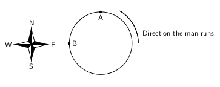
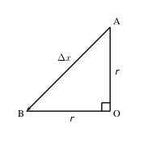

| Motion in One Dimension | ~ | Up | ~ |
| Weight | |
| Exercises |
Such
Peter walks from home !!x! km. in !!t! minutes. Then he turns around and
walks back along the same path, also in !!t! minutes.
Calculate Peter's average velocity and average speed.
Data:
Walk out: $x_1$ = !!x! km.; $t_1$ = !!t! minutes.
Walk back: $x_2$ = !!x! km.; $t_2$ = !!t! minutes.
Set units:
$x_1 =$ !!x! $\times$ 1000 $=$ !!xm! $m$
$t_1 =$ !!t! $\times$ 60 $=$ !!ts! $s$
$x_2 =$ !!x! $\times$ 1000 $=$ !!xm! $m$
$t_2 =$ !!t! $\times$ 60 $=$ !!ts! $s$
Average velocity:
$\Delta x = x_1 - x_2 =$ !!xt! $m$
$\Delta t = t_1 + t_2 =$ !!tt! $s$
$v = \frac{\displaystyle \Delta x}{\displaystyle \Delta t} =$
!!v! $m \cdot s^{-1}$
Average speed:
$d = x_1 + x_2 =$ !!d! $m$
$speed = \frac{\displaystyle d}{\displaystyle \Delta t}$ =
!!s! $m \cdot s^{-1}$

Data:
$r = $ !!r! $m$
$\Delta t =$ !!t! $s$
1. Average speed:
$d = r \times 2\pi$
$speed = \frac{\displaystyle d}{\displaystyle \Delta t} =
\frac{\displaystyle r \times 2\pi}{\displaystyle \Delta t}$ =
!!speed! $m \cdot s^{-1}$
2. Instantaneous velocity at A:
As man's speed is constant, if instantaneous velocity at point A is
!!speed! $m \cdot s^{-1}$ toward West.
3. Instantaneous velocity at B:
As man's speed is constant, if instantaneous velocity at point B is
!!speed! $m \cdot s^{-1}$ toward South.
4. Average velocity between A and B:

5. Average velocity after a revolution:
As distance is 0 in this case,
$\Delta x = 0$ $m$ and
$v = \frac{\displaystyle \Delta x}{\displaystyle \Delta t} =$
0.00 $m \cdot s^{-1}$